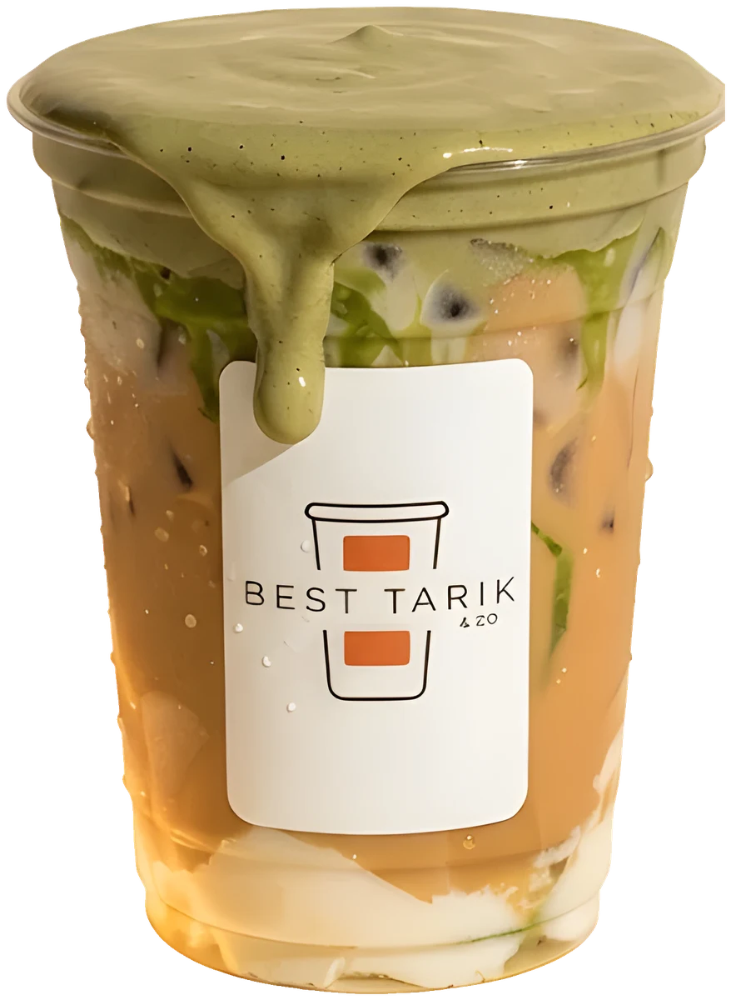
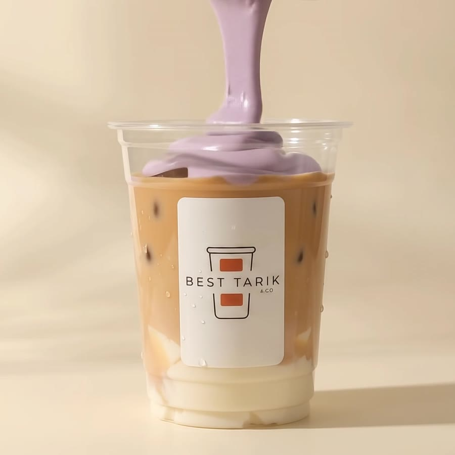

<style>
/* scroll cue sits on its own, centred at the foot of the stage */
.hero-bottom{bottom:calc(5.4rem + env(safe-area-inset-bottom,0px))}
.scroll-cue{position:absolute!important;z-index:4;left:50%!important;bottom:calc(.8rem + env(safe-area-inset-bottom,0px))!important;transform:translateX(-50%)!important;margin:0!important}
@media (min-width:900px){.hero-bottom{bottom:3.4rem}}
</style>

<svg width="0" height="0" style="position:absolute" aria-hidden="true">
  <symbol id="mark" viewBox="0 0 26 34">
    <path d="M2 3h22M4 3l2 12M22 3l-2 12M6 19l2 13h10l2-13" fill="none" stroke="currentColor" stroke-width="1.8" stroke-linecap="round" stroke-linejoin="round"/>
    <rect x="8.5" y="6.5" width="9" height="5.5" fill="#E87825"/>
    <rect x="8.5" y="20.5" width="9" height="5.5" fill="#E87825"/>
  </symbol>
  <symbol id="drop" viewBox="0 0 10 14"><path d="M5 0C5 0 0 6.2 0 9a5 5 0 0 0 10 0C10 6.2 5 0 5 0z" fill="#A95C25"/><path d="M3.2 8.6a1.9 1.9 0 0 0 1.4 2.6" stroke="#F5EBDD" stroke-width=".9" fill="none" stroke-linecap="round" opacity=".7"/></symbol>
</svg>

<header class="header" id="header">
  <a class="logo" href="#top" aria-label="Best Tarik and Co, back to top"><svg aria-hidden="true"><use href="#mark"/></svg><span>BEST TARIK <small>&amp;CO</small></span></a>
  <nav class="nav" aria-label="Sections">
    <a href="#drinks">Drinks</a>
    <a href="#art">The Art</a>
    <a href="#story">Our Story</a>
    <a href="#highlights">Highlights</a>
    <a href="#find">Find Us</a>
  </nav>
  <button class="menu-btn" id="menuBtn" type="button" aria-expanded="false" aria-controls="menu"><i aria-hidden="true"></i><span id="menuLabel">Menu</span></button>
</header>
<nav class="menu" id="menu" aria-label="Sections" hidden>
  <a href="#drinks"><span>01</span>Drinks</a>
  <a href="#art"><span>02</span>The Art</a>
  <a href="#story"><span>03</span>Our Story</a>
  <a href="#highlights"><span>04</span>Highlights</a>
  <a href="#find"><span>05</span>Find Us</a>
  <p>Johor Bahru &middot; @besttarik.co</p>
</nav>

<main id="top">
<!-- 1. Hero -->
<section class="hero" id="hero" aria-label="The art of tarik">
  <svg class="liquid" viewBox="0 0 1000 1000" preserveAspectRatio="xMidYMid slice" aria-hidden="true">
    <defs>
      <linearGradient id="gStream" x1="0" y1="0" x2="0" y2="1"><stop offset="0" stop-color="#A95C25" stop-opacity=".0"/><stop offset=".25" stop-color="#A95C25" stop-opacity=".34"/><stop offset="1" stop-color="#382219" stop-opacity=".12"/></linearGradient>
      <radialGradient id="gBlob1" cx=".4" cy=".4" r=".7"><stop offset="0" stop-color="#FFF3E2" stop-opacity=".9"/><stop offset="1" stop-color="#FFF3E2" stop-opacity="0"/></radialGradient>
      <radialGradient id="gBlob2" cx=".5" cy=".5" r=".6"><stop offset="0" stop-color="#C98A55" stop-opacity=".45"/><stop offset="1" stop-color="#C98A55" stop-opacity="0"/></radialGradient>
    </defs>
    <path class="blob b1" fill="url(#gBlob1)" d="M140 120c120-90 330-70 420 40s40 260-90 320-310 40-370-70-80-200 40-290z"/>
    <path class="blob b2" fill="url(#gBlob2)" d="M560 640c110-70 300-40 360 70s-10 250-150 280-300-20-330-130 10-150 120-220z"/>
    <!-- a pulled-tea ribbon falling behind the cup -->
    <path d="M760 -40 C 700 120, 820 230, 640 360 S 380 560, 470 760 S 420 960, 360 1060" fill="none" stroke="url(#gStream)" stroke-width="64" stroke-linecap="round"/>
    <path class="stream-flow" d="M760 -40 C 700 120, 820 230, 640 360 S 380 560, 470 760 S 420 960, 360 1060" fill="none" stroke="#FFF1DE" stroke-opacity=".55" stroke-width="5" stroke-linecap="round"/>
  </svg>
  <div class="hero-light" aria-hidden="true"></div>

  <div class="hero-top">
    <p class="hero-kicker" id="kicker">The art of</p>
    <p class="hero-place">Johor Bahru<br>Malaysia</p>
  </div>
  <h1 class="hero-word" id="heroWord"><span class="sr">The art of tarik.</span><span aria-hidden="true"><span class="ch">T</span><span class="ch">A</span><span class="ch">R</span><span class="ch">I</span><span class="ch">K</span><span class="ch dot">.</span></span></h1>

  <div class="cup-stage" id="cupStage">
    
    <div class="cup-float" id="cupFloat"></div>
  </div>
  <div class="drops" aria-hidden="true">
    <span class="drop"><svg><use href="#drop"/></svg></span><span class="drop"><svg><use href="#drop"/></svg></span><span class="drop"><svg><use href="#drop"/></svg></span><span class="drop"><svg><use href="#drop"/></svg></span>
  </div>

  <div class="hero-bottom"><p class="hero-sub" id="heroSub">A Malaysian favourite, reimagined.</p></div>
  <a class="scroll-cue" href="#drinks" aria-label="Scroll to the drinks"><span>Scroll</span><i aria-hidden="true"></i></a>
</section>

<!-- 2. Signature drinks -->
<section class="drinks" id="drinks" aria-labelledby="drinks-t">
  <div class="wrap drinks-head">
    <div>
      <div class="eyebrow">Signature drinks</div>
      <h2 class="display" id="drinks-t">Pick your <em>pour.</em></h2>
    </div>
    <p class="count" aria-live="polite"><b id="countNow">01</b> / 03</p>
  </div>
  <ul class="track" id="track" aria-label="Signature drinks, swipe to browse">
    <li class="slide" data-bg="#E5BD8E" aria-label="1 of 3">
      <span class="slide-word" aria-hidden="true">PREMIUM</span>
      <figure></figure>
      <div class="slide-text"><span class="no">01</span><h3>Premium Teh Tarik</h3><p>Pulled tea froth.</p><span class="layers">Teh tarik &middot; Taufufah</span></div>
    </li>
    <li class="slide" data-bg="#CFA27A" aria-label="2 of 3">
      <span class="slide-word" aria-hidden="true">CHAM</span>
      <figure></figure>
      <div class="slide-text"><span class="no">02</span><h3>Cham Teh Tarik</h3><p>Salted coffee cream.</p><span class="layers">Teh tarik &middot; Taufufah</span></div>
    </li>
    <li class="slide" data-bg="#D5D4A4" aria-label="3 of 3">
      <span class="slide-word" aria-hidden="true">MATCHA</span>
      <figure></figure>
      <div class="slide-text"><span class="no">03</span><h3>Matcha Teh Tarik</h3><p>Creamy matcha.</p><span class="layers">Teh tarik &middot; Taufufah</span></div>
    </li>
  </ul>
  <div class="drinks-ctrl">
    <button class="arrow" id="prev" type="button" aria-label="Previous drink"><svg viewBox="0 0 24 24" fill="none" stroke="currentColor" stroke-width="1.8" stroke-linecap="round" stroke-linejoin="round" aria-hidden="true"><path d="M15 5l-7 7 7 7"/></svg></button>
    <div class="dots" id="dots"></div>
    <button class="arrow" id="next" type="button" aria-label="Next drink"><svg viewBox="0 0 24 24" fill="none" stroke="currentColor" stroke-width="1.8" stroke-linecap="round" stroke-linejoin="round" aria-hidden="true"><path d="M9 5l7 7-7 7"/></svg></button>
  </div>
  <p class="swipe-hint">Swipe to explore</p>
</section>

<!-- 3. The art of tarik -->
<section id="art" aria-labelledby="art-t">
  <div class="wrap art-intro">
    <div class="eyebrow">The Art of Tarik</div>
    <h2 class="display" id="art-t"><span class="w">Not</span> <span class="w">just</span> <span class="w">tea.</span><br><span class="w"><em>It's</em></span> <span class="w"><em>the</em></span> <span class="w"><em>art</em></span> <span class="w"><em>of</em></span> <span class="w"><em>tarik.</em></span></h2>
    <p class="lede">Every cup is built from the bottom up. Keep scrolling to watch one come together.</p>
  </div>
  <div class="scrub" id="scrub">
    <div class="scrub-sticky">
      <video id="pour" muted playsinline preload="auto" poster="a/pour-end-tall.jpg" aria-label="A Best Tarik cup being built: soy beancurd spooned in, ice added, teh tarik poured, then cream on top"></video>
      <div class="scrub-shade" aria-hidden="true"></div>
      <div class="scrub-bar" aria-hidden="true"><i id="scrubBar"></i></div>
      <ol class="beats">
        <li class="beat on" data-at="0"><span>01</span><h3>Taufufah first.</h3><p>Silky soy beancurd goes in first, then the ice.</p></li>
        <li class="beat" data-at=".33"><span>02</span><h3>Then the tarik.</h3><p>Rich, milky teh tarik poured over the ice.</p></li>
        <li class="beat" data-at=".66"><span>03</span><h3>A crown of cream.</h3><p>Each flavour lives on top, poured slow and thick.</p></li>
      </ol>
    </div>
  </div>
</section>

<!-- 4. Our story -->
<section class="story" id="story" aria-labelledby="story-t">
  <div class="wrap">
    <div class="story-head">
      <div class="eyebrow">Our Story</div>
      <h2 class="display" id="story-t">Familiar, <em>yet unexpected.</em></h2>
    </div>
    <div class="story-grid">
      <div class="story-row">
        <div class="ph tall reveal"></div>
        <div class="txt">
          <span class="eyebrow">Where it began</span>
          <h3>Born in Johor.</h3>
          <p>Best Tarik &amp; Co was established in Johor, Malaysia, with a vision to bring a fresh and creative twist to the traditional Malaysian teh tarik. By combining familiar local flavours with unique ingredients, the brand introduces a new way to enjoy a beloved Malaysian classic.</p>
        </div>
      </div>
      <div class="story-row flip">
        <div class="ph wide reveal"></div>
        <div class="txt">
          <span class="eyebrow">Why taufufah</span>
          <h3>A drink and a dessert, in one cup.</h3>
          <p>Teh tarik with taufufah was made to be familiar yet unexpected. The rich, comforting taste of traditional teh tarik meets the soft, silky texture of soy pudding: a local beverage and a traditional dessert, together.</p>
        </div>
      </div>
      <div class="story-row">
        <div class="todo tall reveal"><b>Photo to add</b>Your first market stall</div>
        <div class="txt">
          <span class="eyebrow">From a small pop-up</span>
          <h3>The first stall.</h3>
          <p>Every brand has a beginning. Best Tarik &amp; Co started with pop-ups on the streets of Johor, introducing the drink to the local community one cup at a time.</p>
          <p class="todo-text">To add: the story of the first stall day.</p>
        </div>
      </div>
      <div class="story-row flip">
        <div class="txt" style="order:0">
          <span class="eyebrow">Milestones</span>
          <h3>One step at a time.</h3>
          <ol class="milestones">
            <li><span>&mdash;</span>To add: a milestone and its date</li>
            <li><span>&mdash;</span>To add: a milestone and its date</li>
            <li><span>&mdash;</span>To add: a milestone and its date</li>
          </ol>
        </div>
        <div class="txt">
          <span class="eyebrow">Team &amp; preparation</span>
          <h3>Made by hand.</h3>
          <div class="prep">
            <figure><figcaption>Taufufah</figcaption></figure>
            <figure><figcaption>Ice</figcaption></figure>
            <figure><figcaption>Teh tarik</figcaption></figure>
            <figure><figcaption>Cream</figcaption></figure>
          </div>
          <p class="todo-text">To add: a photo of the team at work.</p>
        </div>
      </div>
    </div>
  </div>
</section>

<!-- 5. Highlights -->
<section class="high" id="highlights" aria-labelledby="high-t">
  <div class="wrap">
    <div class="eyebrow">Brand Highlights</div>
    <h2 class="display" id="high-t">Up <em>close.</em></h2>
    <div class="wall">
      <figure class="w-a reveal"><figcaption>Salted coffee cream</figcaption></figure>
      <figure class="w-b cut reveal"><figcaption>Matcha</figcaption></figure>
      <figure class="w-c reveal"><figcaption>The pour</figcaption></figure>
      <figure class="w-d reveal"><figcaption>Creamy matcha</figcaption></figure>
      <figure class="w-e reveal"><figcaption>Taufufah</figcaption></figure>
      <figure class="w-f todo reveal"><b>Photo to add</b>The stall</figure>
      <figure class="w-g cut reveal"><figcaption>Premium</figcaption></figure>
      <figure class="w-h todo reveal"><b>Photo to add</b>A brand moment</figure>
    </div>
  </div>
</section>

<!-- 6. Find us -->
<section class="find" id="find" aria-labelledby="find-t">
  <div class="wrap">
    <div class="eyebrow">Find Us</div>
    <h2 class="display" id="find-t">Come <em>find us.</em></h2>
    <dl class="find-grid">
      <div class="find-item"><dt>Location</dt><dd>Jalan Sri Pelangi, Johor Bahru<br><span class="ph">To add: full stall address</span></dd></div>
      <div class="find-item"><dt>Hours</dt><dd><span class="ph">To add: operating days and hours</span></dd></div>
      <div class="find-item"><dt>Say hello</dt><dd>@besttarik.co<br><span class="ph">To add: WhatsApp number</span></dd></div>
    </dl>
    <div class="find-cta">
      <a class="pill solid" href="https://www.google.com/maps/search/?api=1&amp;query=Jalan%20Sri%20Pelangi%2C%20Johor%20Bahru" target="_blank" rel="noopener"><svg viewBox="0 0 24 24" fill="none" stroke="currentColor" stroke-width="1.8" aria-hidden="true"><path d="M12 21s-7-6.2-7-11.5A7 7 0 0 1 19 9.5C19 14.8 12 21 12 21z"/><circle cx="12" cy="9.5" r="2.5"/></svg>Open in Google Maps</a>
      <a class="pill ghost" href="https://www.instagram.com/besttarik.co/" target="_blank" rel="noopener"><svg viewBox="0 0 24 24" fill="none" stroke="currentColor" stroke-width="1.8" aria-hidden="true"><rect x="3" y="3" width="18" height="18" rx="5"/><circle cx="12" cy="12" r="4.2"/><circle cx="17.4" cy="6.6" r="1" fill="currentColor" stroke="none"/></svg>Instagram</a>
    </div>
    <div class="foot">
      <p class="big">Best Tarik &amp; Co.</p>
      <span>Teh tarik with taufufah. Johor Bahru, Malaysia.</span>
      <span>The art of tarik.</span>
    </div>
  </div>
</section>
</main>

<script src="https://cdnjs.cloudflare.com/ajax/libs/gsap/3.12.2/gsap.min.js"></script>
<script src="https://cdnjs.cloudflare.com/ajax/libs/gsap/3.12.2/ScrollTrigger.min.js"></script>
<script src="https://cdn.jsdelivr.net/npm/motion@11.11.13/dist/motion.js"></script>
<script type="importmap">
{"imports":{"three":"https://cdn.jsdelivr.net/npm/three@0.160.0/build/three.module.js","three/addons/":"https://cdn.jsdelivr.net/npm/three@0.160.0/examples/jsm/"}}
</script>

<script>
/* ---------- page chrome: header, menu, section spy (no libraries needed) ---------- */
(function(){
  const header = document.getElementById('header'), hero = document.getElementById('hero');
  const onScroll = ()=>header.classList.toggle('solid', scrollY > hero.offsetHeight - 80);
  addEventListener('scroll', onScroll, {passive:true}); onScroll();
  const menu = document.getElementById('menu'), btn = document.getElementById('menuBtn'), label = document.getElementById('menuLabel');
  function setMenu(open){
    btn.setAttribute('aria-expanded', open); label.textContent = open ? 'Close' : 'Menu'; header.classList.toggle('on-menu', open);
    if (open){ menu.hidden = false; requestAnimationFrame(()=>menu.classList.add('open')); document.documentElement.style.overflow = 'hidden'; menu.querySelector('a').focus(); }
    else { menu.classList.remove('open'); document.documentElement.style.overflow = ''; setTimeout(()=>{ if (!menu.classList.contains('open')) menu.hidden = true; }, 280); }
  }
  btn.addEventListener('click', ()=>setMenu(btn.getAttribute('aria-expanded') !== 'true'));
  menu.querySelectorAll('a').forEach(a=>a.addEventListener('click', ()=>setMenu(false)));
  document.addEventListener('keydown', e=>{ if (e.key === 'Escape' && !menu.hidden){ setMenu(false); btn.focus(); } });
  const links = [...document.querySelectorAll('.nav a')];
  const spy = new IntersectionObserver(es=>es.forEach(e=>{ if (e.isIntersecting) links.forEach(a=>a.classList.toggle('active', a.getAttribute('href') === '#' + e.target.id)); }), {rootMargin:'-40% 0px -55% 0px'});
  ['drinks','art','story','highlights','find'].forEach(id=>spy.observe(document.getElementById(id)));
  new IntersectionObserver(es=>{ if (es[0].isIntersecting) links.forEach(a=>a.classList.remove('active')); }, {rootMargin:'-40% 0px -55% 0px'}).observe(hero);
})();

/* ---------- signature drinks: native touch swipe (scroll-snap), colour follows the drink ---------- */
(function(){
  const sec = document.getElementById('drinks'), track = document.getElementById('track');
  const slides = [...track.children], dotsEl = document.getElementById('dots'), now = document.getElementById('countNow');
  const prev = document.getElementById('prev'), next = document.getElementById('next');
  const names = slides.map(s=>s.querySelector('h3').textContent);
  const dots = slides.map((s,i)=>{ const b = document.createElement('button'); b.type = 'button'; b.setAttribute('aria-label', `Show ${names[i]}`); b.innerHTML = '<i></i>'; b.addEventListener('click', ()=>go(i)); dotsEl.appendChild(b); return b; });
  let cur = -1;
  function go(i){ track.scrollTo({left: slides[i].offsetLeft - track.offsetLeft, behavior: matchMedia('(prefers-reduced-motion: reduce)').matches ? 'auto' : 'smooth'}); }
  function setActive(i){
    if (i === cur) return; cur = i;
    sec.style.setProperty('--bg', slides[i].dataset.bg);
    now.textContent = String(i+1).padStart(2,'0');
    dots.forEach((d,k)=>d.setAttribute('aria-current', k === i ? 'true' : 'false'));
    prev.disabled = i === 0; next.disabled = i === slides.length - 1;
    document.dispatchEvent(new CustomEvent('drinkchange', {detail:{index:i, slide:slides[i]}}));
  }
  const io = new IntersectionObserver(es=>es.forEach(e=>{ if (e.isIntersecting && e.intersectionRatio > .6) setActive(slides.indexOf(e.target)); }), {root:track, threshold:[.6]});
  slides.forEach(s=>io.observe(s));
  prev.addEventListener('click', ()=>go(Math.max(0, cur-1)));
  next.addEventListener('click', ()=>go(Math.min(slides.length-1, cur+1)));
  track.addEventListener('keydown', e=>{ if (e.key === 'ArrowRight'){ e.preventDefault(); go(Math.min(slides.length-1, cur+1)); } if (e.key === 'ArrowLeft'){ e.preventDefault(); go(Math.max(0, cur-1)); } });
  track.tabIndex = 0;
  setActive(0);
})();
</script>

<script type="module">
/* ---------- hero: the 3D cup (same model and textures as Version 1) ---------- */
import * as THREE from 'three';
import { RoomEnvironment } from 'three/addons/environments/RoomEnvironment.js';
const reduce = matchMedia('(prefers-reduced-motion: reduce)').matches;
const fine = matchMedia('(hover: hover) and (pointer: fine)').matches;
const heroEl = document.getElementById('hero'), stage = document.getElementById('cupStage'), floatEl = document.getElementById('cupFloat');
function webglOK(){ try { const c = document.createElement('canvas'); return !!(c.getContext('webgl2') || c.getContext('webgl')); } catch(e){ return false; } }
const A = webglOK() ? await fetch('a/assets.json').then(r=>r.json()).catch(()=>null) : null;
if (A){
  const renderer = new THREE.WebGLRenderer({antialias:true, alpha:true, powerPreference:'high-performance'});
  renderer.setPixelRatio(Math.min(innerWidth < 600 ? 2 : 1.75, devicePixelRatio));
  renderer.outputColorSpace = THREE.SRGBColorSpace;
  floatEl.appendChild(renderer.domElement);
  const scene = new THREE.Scene();
  scene.environment = new THREE.PMREMGenerator(renderer).fromScene(new RoomEnvironment(), 0.04).texture;
  const camera = new THREE.PerspectiveCamera(30, 1, .1, 100);
  const HW = 3;
  const lean = new THREE.Group(); lean.rotation.z = -0.12; scene.add(lean);
  const tilt = new THREE.Group(); lean.add(tilt);
  const spinG = new THREE.Group(); tilt.add(spinG);
  const maxAniso = renderer.capabilities.getMaxAnisotropy();
/*__CUPCORE__*/
  function frame(){
    const w = heroEl.clientWidth, h = heroEl.clientHeight; renderer.setSize(w, h, false); camera.aspect = w/h;
    const small = w < 900;
    const share = small ? .44 : .66;
    const dist = (HW/share) / (2*Math.tan(THREE.MathUtils.degToRad(camera.fov/2)));
    const oy = small ? .62 : -.15;                      // on a phone the cup sits low, under the word
    camera.position.set(0, oy, dist); camera.lookAt(0, oy, 0); camera.updateProjectionMatrix();
  }
  frame(); addEventListener('resize', frame);
  texFor('premium').then(set=>{ setCup('premium', set); renderer.render(scene, camera); stage.classList.add('ready'); });

  // pointer lean on desktop; a slow showroom sway everywhere; scroll adds a turn as you leave the stage
  const mouse = {x:0, y:0}, cm = {x:0, y:0};
  if (fine) addEventListener('pointermove', e=>{ mouse.x = e.clientX/innerWidth - .5; mouse.y = e.clientY/innerHeight - .5; });
  let visible = true, scrollP = 0;
  new IntersectionObserver(es=>{ visible = es[0].isIntersecting; }).observe(heroEl);
  addEventListener('scroll', ()=>{ scrollP = Math.min(1, Math.max(0, scrollY / heroEl.offsetHeight)); }, {passive:true});
  function loop(t){
    requestAnimationFrame(loop);
    if (!visible || document.hidden) return;
    cm.x += (mouse.x - cm.x) * .05; cm.y += (mouse.y - cm.y) * .05;
    const sway = reduce ? 0 : Math.sin(t/2600) * .26;
    spinG.rotation.y = sway + cm.x * .7 + scrollP * 1.4;
    tilt.rotation.x = cm.y * .3 + scrollP * .25;
    renderer.render(scene, camera);
  }
  requestAnimationFrame(loop);
} else {
  stage.classList.remove('ready');   // keep the photo poster
}
</script>

<script>
/* ---------- scroll storytelling (GSAP + ScrollTrigger) and small transitions (Motion) ---------- */
(function(){
  const reduce = matchMedia('(prefers-reduced-motion: reduce)').matches;
  const video = document.getElementById('pour');
  const tall = innerWidth / innerHeight < 1;
  video.src = tall ? 'a/pour-scrub-tall.mp4' : 'a/pour-scrub.mp4';
  video.poster = tall ? 'a/pour-end-tall.jpg' : 'a/pour-end.jpg';
  const beats = [...document.querySelectorAll('.beat')], bar = document.getElementById('scrubBar');

  if (reduce || !window.gsap || !window.ScrollTrigger){
    // still and readable: the finished cup, every caption shown
    beats.forEach(b=>b.classList.add('on'));
    if (bar) bar.style.transform = 'scaleX(1)';
    return;
  }
  gsap.registerPlugin(ScrollTrigger);

  // hero entrance: kicker, giant word, line
  const chars = gsap.utils.toArray('.hero-word .ch');
  gsap.from(chars, {yPercent:110, opacity:0, duration:1.1, ease:'expo.out', stagger:.06, delay:.15});
  gsap.from(['#kicker', '.hero-place'], {y:18, opacity:0, duration:.9, ease:'power3.out', delay:.35, stagger:.08});
  gsap.from('#heroSub', {y:14, opacity:0, duration:.9, ease:'power3.out', delay:.75});

  // leaving the hero: the cup sinks toward the drinks below, the word lifts away
  const heroTl = gsap.timeline({scrollTrigger:{trigger:'#hero', start:'top top', end:'bottom top', scrub:.6}});
  heroTl.to('#cupStage', {yPercent:26, scale:.84, ease:'none'}, 0)
        .to('#heroWord', {yPercent:-30, opacity:.15, ease:'none'}, 0)
        .to(['.hero-top', '.hero-bottom', '.scroll-cue'], {y:-60, opacity:0, ease:'none'}, 0);

  // drinks: the first cup rises in to meet the one leaving the hero
  gsap.from('#track .slide:first-child figure', {y:120, scale:.9, opacity:.2, ease:'none', scrollTrigger:{trigger:'#drinks', start:'top bottom', end:'top 35%', scrub:.6}});

  // the art intro: words rise in order
  gsap.from('.art-intro .w', {yPercent:60, opacity:0, duration:.9, ease:'power3.out', stagger:.06, scrollTrigger:{trigger:'.art-intro', start:'top 75%'}});

  // the pour, scrubbed by scroll (no hijacking: the page scrolls normally, the video just follows)
  let dur = 0, want = 0, seeking = false;
  const setBeat = p=>{ const i = p < .33 ? 0 : p < .66 ? 1 : 2; beats.forEach((b,k)=>b.classList.toggle('on', k === i)); };
  function seek(){ if (!dur || seeking) return; if (Math.abs(video.currentTime - want) < .02) return; seeking = true; video.currentTime = want; }
  video.addEventListener('seeked', ()=>{ seeking = false; seek(); });
  video.addEventListener('loadedmetadata', ()=>{ dur = video.duration; seek(); });
  // iOS only paints frames after a play: prime it once, silently
  video.addEventListener('loadeddata', ()=>{ const p = video.play(); if (p) p.then(()=>video.pause()).catch(()=>{}); }, {once:true});
  ScrollTrigger.create({trigger:'#scrub', start:'top top', end:'bottom bottom', scrub:true,
    onUpdate(self){ const p = self.progress; want = p * Math.max(0, dur - .05); seek(); bar.style.transform = `scaleX(${p.toFixed(4)})`; setBeat(p); }});

  // editorial reveals: photos uncover from the bottom, once
  gsap.utils.toArray('.reveal').forEach(el=>{
    gsap.fromTo(el, {clipPath:'inset(18% 0 0 0)', y:30}, {clipPath:'inset(0% 0 0 0)', y:0, duration:1.1, ease:'expo.out', scrollTrigger:{trigger:el, start:'top 88%'}});
  });
  gsap.utils.toArray('.story-row h3, .high h2, .story-head h2, .find h2, .drinks-head h2').forEach(el=>{
    gsap.from(el, {y:30, opacity:0, duration:.9, ease:'power3.out', scrollTrigger:{trigger:el, start:'top 88%'}});
  });

  // Motion: each drink's words arrive with a soft spring when it becomes the active slide
  if (window.Motion){
    const { animate, stagger } = Motion;
    document.addEventListener('drinkchange', e=>{
      const s = e.detail.slide;
      animate(s.querySelectorAll('.slide-text > *'), {y:[18,0], opacity:[0,1]}, {type:'spring', bounce:.2, duration:.7, delay:stagger(.06)});
      animate(s.querySelector('.slide-word'), {x:[40,0], opacity:[0,1]}, {duration:.9, easing:[.23,1,.32,1]});
    });
  }
  addEventListener('load', ()=>ScrollTrigger.refresh());
})();
</script>
